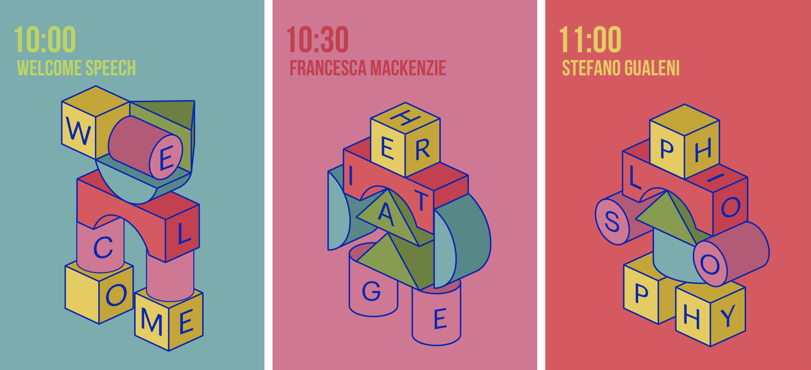
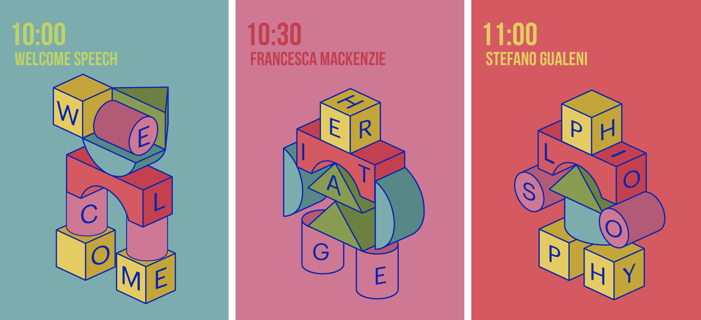

Every guest and every talk had a distinct mascot, created with the five building blocks that make up the visual communication system.


The guests of the conference were interviewed and the talks have been split in a short video based on the question/answer format.